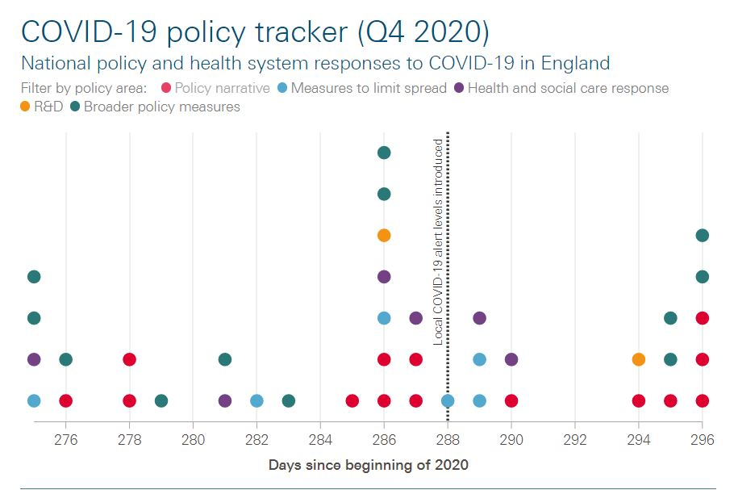
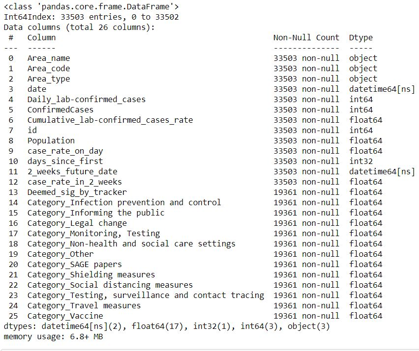
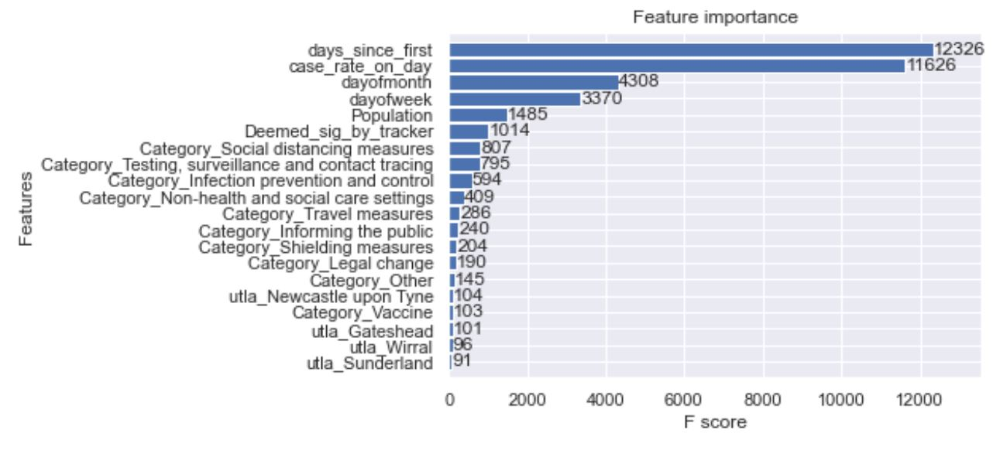
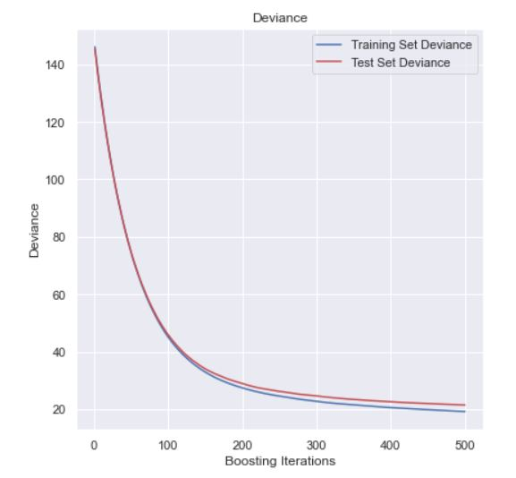

Gradient Boosted Model to Predict COVID Cases in the UK to determine key Policies
The point of these Notebooks is to see the impact that UK policies have had on future COVID rates. I developed a Spreadsheet of key policy events from multiple sources and used that in combination with covid case rate to determine number of cases two weeks in the future. While the model could be drastically improved with further parameter tuning and inclusion of additional key features (like weather), the model uncovered three key policy categories that impact COVID rates.
The model code can be found in XG Boost Model.ipynb , and subsequent analysis of the policy tracker can be found at Policy Analysis.ipynb.

#1. Data Prep
There were two primary data sources that contributed to this Model:
1. COVID-19 Case Rate data. This was provided directly from the NHS government website. It was far from a ready to use csv and required some quick changes in Excel before it could be brought into Python.
2. The Policy Tracker data. This data provided every event/ move the government has taken in response to the COVID-19 efforts.
COVID data was first imported and then grouped by date and Upper Tier Local Authority Area (UTLA). Case rate was then calculated relative to population for each UTLA. Then case rates two weeks in the future were attached. This will be our Y. As such, all features will relate to today, but what we’re predicting is two weeks in the future.
Policy Data was then incorporated and attached to differing categories. There values relate to how many of each type of policy occurred on a specific day.

#2. The Model
The algorithm used is an xgboost, through the xgboost package. The point of the model would to see the f score of the variables and see if any category of policy was influential in predicting the number of cases.
The F Score shows that the top three most influential policy types were:
Social Distancing Measures / Testing, Tracing, and Surveillance / Infection Prevention and Control

A gradient boosting model was also run for secondary validation. There was little deviance between the test and train sets across boosting iterations. The Reg score was: 0.8545 and the RMSLE was 0.515.

These policies were then examined in more depth independently from this model here.

Stuart Ross
A Data Science Intern at Leeds Institute of Data Analytics. This was completed in my spare time as an independent learning oppertunity... and for a bit of fun too!